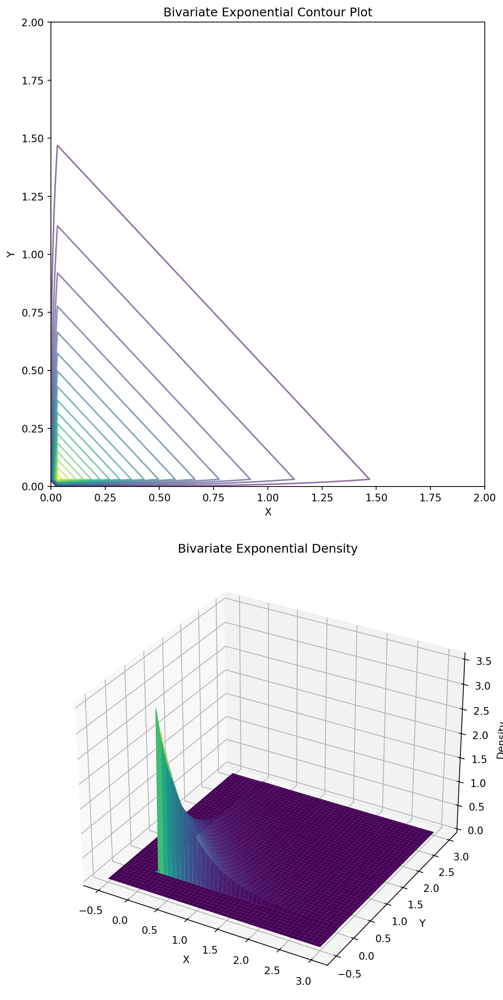
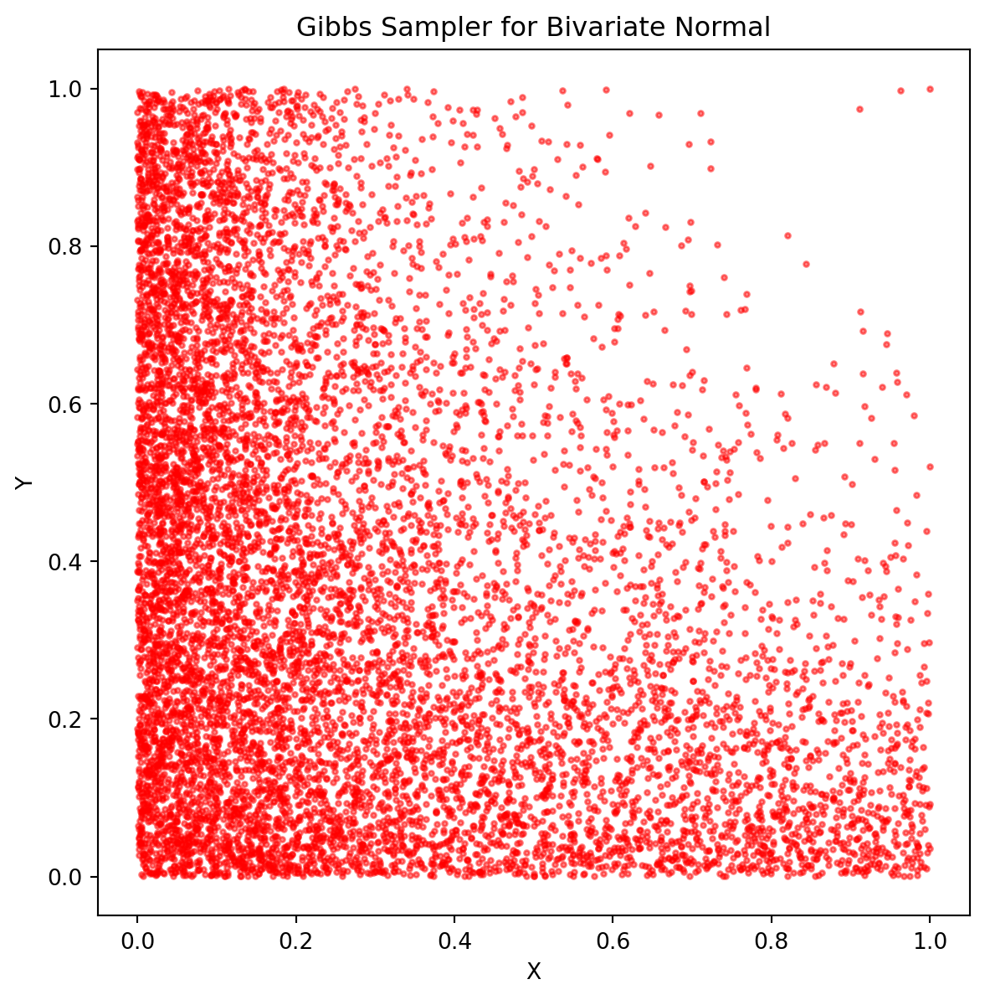
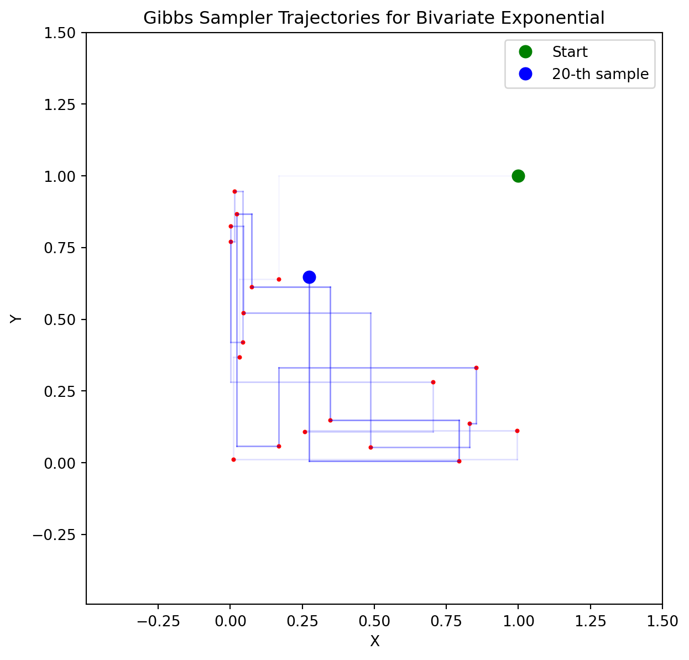
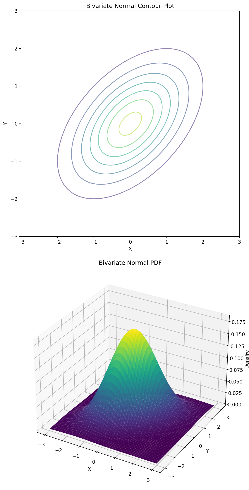
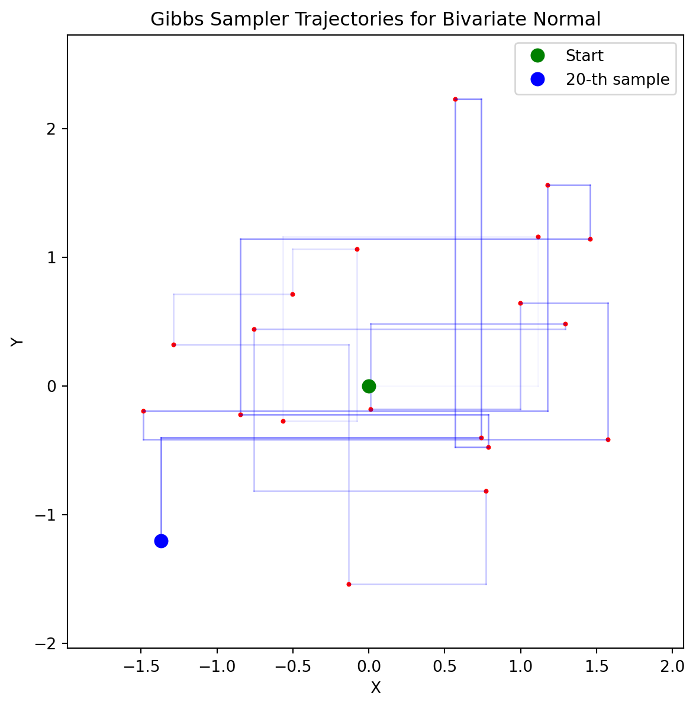

10 Gibbs Sampling
11 Gibbs Sampling
Gibbs Sampling is a Markov Chain Monte Carlo algorithm that is used to sample from a joint distribution using conditional distributions. For now, we’ll focus on sampling in 2D, but the algorithm generalizes to higher dimensions.
Gibbs Sampling Algorithm
The Gibbs sampling algorithm for sampling from a joint distribution \(f_{X, Y}(x, y)\) is as follows:
- Start with some initial values \(X_0\) and \(Y_0\).
- For \(i = 1, 2, \ldots, N\):
- Sample \(X_i \sim f_{X|Y}(\cdot \mid Y_{i-1})\).
- Sample \(Y_i \sim f_{Y|X}(\cdot \mid X_i)\).
- Return the sequence \((X_0, Y_0), (X_1, Y_1), \ldots, (X_N, Y_N)\).
The algorithm generates a sample path of length \(N\) of the Markov Chain as described in Section 11.3. If needed, we can discard the initial samples to ensure that the Markov Chain has converged to the stationary distribution.
11.1 Joint Exponential Distribution
Let \(X\) and \(Y\) be two random variables with the truncated exponential distribution:
\[ f_{X,Y}(x, y) = c e^{-\lambda xy} \quad \text{for } 0 \leq x \leq D_1, \, 0 \leq y \leq D_2, \]
where \(c\) is the normalization constant. We want to sample from the joint distribution \(f_{X,Y}\).
One can show that the conditionals are:
\[ \begin{aligned} f_{X|Y}(x \mid y_0) &= c_{y_0} e^{-\lambda x y_0} \quad \text{for } 0 \leq x \leq D_1 \\ f_{Y|X}(y \mid x_0) &= c_{x_0} e^{-\lambda y x_0} \quad \text{for } 0 \leq y \leq D_2, \end{aligned} \]
where \(c_{y_0}\) and \(c_{x_0}\) are the normalization constants.
Key Insight
Notice that each conditional distribution is simply a truncated exponential distribution with rate parameter that depends on the conditioning variable. This makes sampling straightforward using the inverse transform method.
We can easily sample from the two conditionals \(f_{X|Y}\) and \(f_{Y|X}\) using the inverse transform method (even for truncated distributions).
Gibbs Algorithm for Joint Exponential Distribution
- Start with some initial values \(X_0\) and \(Y_0\).
- For \(i = 1, 2, \ldots, N\):
- Sample \(X_i \sim \text{Exp}(\lambda Y_{i-1})\) restricted to \([0, D_1]\) using the inverse transform method.
- Sample \(Y_i \sim \text{Exp}(\lambda X_i)\) restricted to \([0, D_2]\) using the inverse transform method.
- Return the sequence \((X_0, Y_0), (X_1, Y_1), \ldots, (X_N, Y_N)\).


11.2 Bivariate Normal Distribution
Suppose \((X, Y)\) has a bivariate normal distribution with mean \((0, 0)\) and covariance matrix \(\Sigma = \begin{pmatrix} 1 & \rho \\ \rho & 1 \end{pmatrix}\). We want to sample from the joint distribution \(f_{X, Y}\).
One can show that the conditional distributions are:
\[ \begin{aligned} (X \mid Y = y_0) &\sim \mathcal{N}(\rho y_0, 1 - \rho^2) \\ (Y \mid X = x_0) &\sim \mathcal{N}(\rho x_0, 1 - \rho^2). \end{aligned} \]
Key Property
Notice that both conditional distributions have the same variance \(1 - \rho^2\), which decreases as the correlation \(|\rho|\) increases. When \(\rho = 0\) (independence), the conditional variance equals the marginal variance.
We can sample from the two conditionals \(f_{X|Y}\) and \(f_{Y|X}\) using standard normal sampling methods such as the Box-Muller transform.
Gibbs Algorithm for Bivariate Normal Distribution
- Start with some initial values \(X_0\) and \(Y_0\).
- For \(i = 1, 2, \ldots, N\):
- Sample \(X_i \sim \mathcal{N}(\rho Y_{i-1}, 1 - \rho^2)\).
- Sample \(Y_i \sim \mathcal{N}(\rho X_i, 1 - \rho^2)\).
- Return the sequence \((X_0, Y_0), (X_1, Y_1), \ldots, (X_N, Y_N)\).



11.3 Markov Chain
The Gibbs sampling algorithm generates a Markov Chain whose state space is the product space of the state spaces of the individual variables \(\Omega = \Omega_X \times \Omega_Y\). In the above examples, the state space is \([0, D_1] \times [0, D_2]\) for the exponential distribution and \(\mathbb{R}^2\) for the bivariate normal distribution.
The transition matrix of the Markov Chain in the discrete case is given by:
\[ P \left( \begin{bmatrix} x \\ y \end{bmatrix}, \begin{bmatrix} x' \\ y' \end{bmatrix} \right) = \mathbb{P}(X_{i+1} = x' \mid Y_i = y) \mathbb{P}(Y_{i+1} = y' \mid X_{i+1} = x'). \]
In the continuous case, the transition kernel is given by:
\[ K \left( \begin{bmatrix} x \\ y \end{bmatrix}, \begin{bmatrix} x' \\ y' \end{bmatrix} \right) = f_{X|Y}(x' \mid y) f_{Y|X}(y' \mid x'). \]
Important Detail
Note that in the transition kernel, we condition \(Y_{i+1}\) on the newly sampled value \(X_{i+1} = x'\), not on the previous value \(X_i = x\). This reflects the sequential nature of the Gibbs sampler.
Theorem 11.1 (Theorem: Gibbs Chain Stationarity) The Gibbs sampling algorithm generates a Markov Chain with the transition kernel \(K\) as described above. The joint distribution \(f_{X, Y}\) is a stationary distribution of the Markov Chain. Hence, if the Markov Chain converges to the stationary distribution, the samples generated by the Gibbs algorithm will be distributed according to \(f_{X, Y}\).
Proof. For simplicity, we assume \(f\) represents a discrete distribution, though the proof extends naturally to the continuous case.
We establish stationarity by verifying detailed balance for each component of the Gibbs sampler separately.
Part I: Detailed Balance for the Odd Step (Update \(X\))
The odd step updates only the \(X\) component, keeping \(Y\) fixed. The transition probabilities are: \[P_{\text{odd}}[(x',y') , (x,y)] = \begin{cases} f_{X|Y}(x \mid y') & \text{if } y' = y \\ 0 & \text{if } y' \neq y \end{cases}\]
For states with \(y' = y\), we verify: \[f_{X,Y}(x',y) \cdot f_{X|Y}(x \mid y) = f_{X,Y}(x,y) \cdot f_{X|Y}(x' \mid y)\]
Using \(f_{X,Y}(a,b) = f_{X|Y}(a \mid b) f_Y(b)\): \[\begin{align} \text{LHS} &= f_{X|Y}(x' \mid y) \cdot f_Y(y) \cdot f_{X|Y}(x \mid y) \\ \text{RHS} &= f_{X|Y}(x \mid y) \cdot f_Y(y) \cdot f_{X|Y}(x' \mid y) \end{align}\]
Clearly, LHS = RHS. For states with \(y' \neq y\), both sides equal zero since the transition probability is zero.
Part II: Detailed Balance for the Even Step (Update \(Y\))
The even step updates only the \(Y\) component, keeping \(X\) fixed. The transition probabilities are: \[P_{\text{even}}[(x',y') , (x,y)] = \begin{cases} f_{Y|X}(y \mid x') & \text{if } x' = x \\ 0 & \text{if } x' \neq x \end{cases}\]
For states with \(x' = x\), we verify: \[f_{X,Y}(x,y') \cdot f_{Y|X}(y \mid x) = f_{X,Y}(x,y) \cdot f_{Y|X}(y' \mid x)\]
Using \(f_{X,Y}(a,b) = f_{Y|X}(b \mid a) f_X(a)\): \[\begin{align} \text{LHS} &= f_{Y|X}(y' \mid x) \cdot f_X(x) \cdot f_{Y|X}(y \mid x) \\ \text{RHS} &= f_{Y|X}(y \mid x) \cdot f_X(x) \cdot f_{Y|X}(y' \mid x) \end{align}\]
Again, LHS = RHS. For states with \(x' \neq x\), both sides equal zero.
Conclusion
Since both \(P_{\text{odd}}\) and \(P_{\text{even}}\) satisfy detailed balance with \(f_{X,Y}\), and the complete Gibbs transition is \(P = P_{\text{even}} P_{\text{odd}}\), the distribution \(f_{X,Y}\) is stationary under the full Gibbs sampler.
11.4 Concluding Remarks
We have introduced the Gibbs sampling algorithm as a powerful MCMC method for sampling from joint distributions when the conditional distributions are known and easy to sample from. The key insights from our analysis are:
Algorithmic Simplicity: Gibbs sampling reduces the complex problem of sampling from a joint distribution to the simpler task of iteratively sampling from conditional distributions.
Theoretical Foundation: We proved that the joint distribution \(f_{X,Y}\) is a stationary distribution of the Markov Chain generated by the Gibbs sampler, ensuring that our samples will asymptotically follow the target distribution.
Practical Examples: Through the joint exponential and bivariate normal distributions, we demonstrated how the algorithm adapts to different types of conditional distributions—from truncated exponentials to Gaussians.
The examples we studied involved continuous random variables with relatively simple conditional forms. However, the true power of Gibbs sampling becomes apparent when dealing with high-dimensional discrete systems where direct sampling from the joint distribution is computationally intractable.
Looking Ahead: The Ising Model
In our next topic, we will apply Gibbs sampling to the Ising model—a fundamental model in statistical physics that describes magnetic systems. The Ising model presents several new challenges:
- Discrete state space: Each site takes values in \(\{-1, +1\}\) rather than continuous values
- High dimensionality: We’ll work with lattices containing hundreds or thousands of sites
- Complex dependencies: Each site’s conditional distribution depends on all its neighbors
- Phase transitions: The model exhibits different behavior at different temperatures
The Ising model will demonstrate how Gibbs sampling can tackle problems where the joint distribution is known up to a normalization constant, but direct sampling is impossible due to the combinatorial explosion of possible configurations.
The techniques we’ve developed here—understanding the Markov chain structure, working with conditional distributions, and ensuring proper convergence—will be essential tools as we move to this more complex and practically important application.